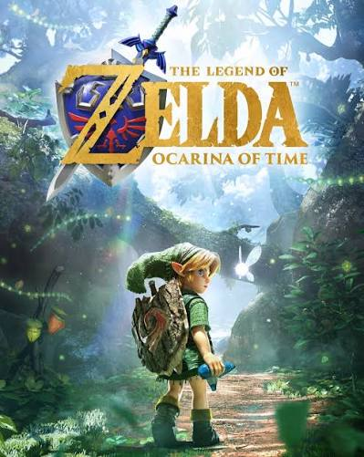

The Legend of Zelda: Ocarina of Time

Description
The Legend of Zelda: Ocarina of Time is a single-player action game with puzzle-solving elements.
The story follows Link, a boy raised among the Kokiri in the forest village of Hyrule. Summoned by the guardian spirit, the Great Deku Tree, Link learns of an impending danger: Ganondorf, leader of the Gerudo, seeks the Triforce, a sacred relic that grants godlike power. With the aid of Princess Zelda and his fairy companion Navi, Link embarks on a quest to secure the three Spiritual Stones and open the path to the Sacred Realm before Ganondorf can seize control of Hyrule. The adventure spans both Link's childhood and adulthood, with time itself becoming central to his mission."